مفصل الوركHip Joint
نظري · م05 · 12.0 دقيقةأقسام المحاضرة (6)
مقدمة وسطحا المفصلIntroduction & Articulating Surfaces
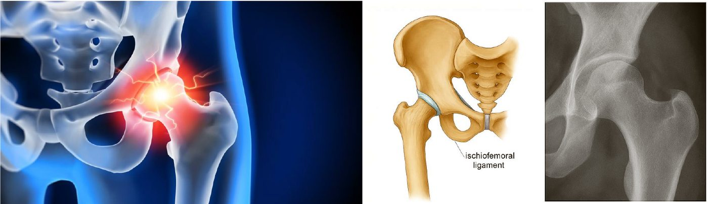
Lecture 5: Hip Joint: Type, Articular Surfaces, Capsule and Ligaments, Radiological Features, and Dislocation
المحاضرة الخامسة: مفصل الورك: نوعه، والأسطح المفصلية، والكبسولة والأربطة، والملامح الشعاعية، والخلع.
مفصل الوركThe Hip Joint
The hip joint is a ball and socket synovial joint, formed by an articulation between the pelvic acetabulum and the head of the femur.
مفصل الورك مفصل زليلي من النوع الكروي (الكرة والحُقّ)، يتكوّن من التقاء حُقّ الحوض مع رأس عظم الفخذ.
It forms a connection from the lower limb to the pelvic girdle, and thus is designed for stability and weight-bearing – rather than a large range of movement.
يربط الطرف السفلي بالحزام الحوضي، ولذلك صُمّم للثبات وتحمّل الوزن، لا لمدى حركة واسع.
بنية مفصل الوركStructures of the Hip Joint
1- الأسطح المفصلية1- Articulating Surfaces
The hip joint consists of an articulation between the head of femur and acetabulum of the pelvis.
يتكوّن مفصل الورك من التقاء رأس عظم الفخذ مع حُقّ الحوض.
The acetabulum is a cup-like depression located on the inferolateral aspect of the pelvis. Its cavity is deepened by the presence of a fibrocartilaginous collar – the acetabular labrum. The head of femur is hemispherical, and fits completely into the concavity of the acetabulum.
الحُقّ تجويف يشبه الكأس يقع على الجانب السفلي الوحشي من الحوض. ويزداد عمق تجويفه بوجود طوق غضروفي ليفي هو الشفا الحُقّي. ورأس عظم الفخذ نصف كروي، ويستقر بالكامل داخل تقعّر الحُقّ.
Both the acetabulum and head of femur are covered in articular cartilage, which is thicker at the places of weight bearing.
يُغطّى كلٌّ من الحُقّ ورأس عظم الفخذ بالغضروف المفصلي، وهو أسمك في مواضع تحمّل الوزن.
The capsule of the hip joint attaches to the edge of the acetabulum proximally. Distally, it attaches to the intertrochanteric line anteriorly and the femoral neck posteriorly.
تلتصق كبسولة مفصل الورك بحافة الحُقّ من الجهة القريبة. أما من الجهة البعيدة فتلتصق بالخط بين المدوّرين من الأمام وبعنق الفخذ من الخلف.
كبسولة المفصل وأنواع المفاصلCapsule & Types of Joints
2- كبسولة مفصل الورك2- Capsule of the Hip Joint
التعريفDefinition
The articular capsule of the hip joint is a strong fibrous envelope that completely surrounds the joint, connecting the acetabulum of the pelvis to the neck of the femur. It provides both stability and mobility to the hip.
كبسولة مفصل الورك غلاف ليفي قوي يحيط بالمفصل بالكامل، ويربط حُقّ الحوض بعنق الفخذ. وهي تمنح الورك الثبات والحركة معاً.
البنيةStructure
The capsule has two main layers:
تتكوّن الكبسولة من طبقتين رئيسيتين:
- • Fibrous layer (outer): Thick and tough, made of dense connective tissue.1. الطبقة الليفية (الخارجية): سميكة وقاسية، مكوّنة من نسيج ضام كثيف.
- • Synovial membrane (inner): Lines the inside of the capsule and secretes synovial fluid, which lubricates the joint and nourishes the articular cartilage.2. الغشاء الزليلي (الداخلي): يبطّن داخل الكبسولة ويفرز السائل الزليلي، الذي يزلّق المفصل ويغذّي الغضروف المفصلي.
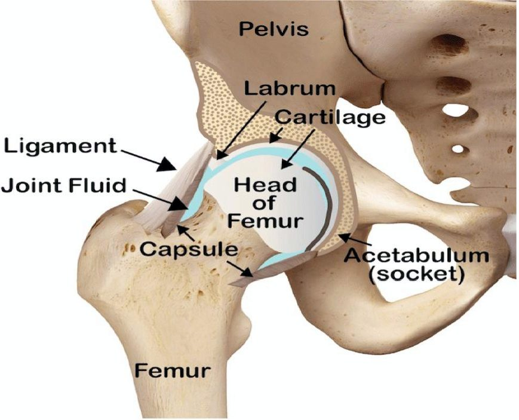
أنواع المفاصل في جسم الإنسانTypes of Joints in the Human Body
1. المفاصل الليفيةFibrous joints:
- • Bones are connected by fibrous tissue.ترتبط العظام بنسيج ليفي.
- • Movement: very limited or none.الحركة: محدودة جداً أو معدومة.
- • Example: sutures of the skull.مثال: دروز الجمجمة.
2. المفاصل الغضروفيةCartilaginous joints:
- • Bones are joined by cartilage.ترتبط العظام بغضروف.
- • Movement: slight.الحركة: طفيفة.
- • Example: pubic symphysis.مثال: الارتفاق العاني.
3. المفاصل الزليليةSynovial joints:
- • Have a joint cavity filled with synovial fluid.فيها تجويف مفصلي مملوء بالسائل الزليلي.
- • Movement: freely movable.الحركة: حرّة.
- • Types: ball and socket, hinge, pivot, saddle, etc.أنواعها: الكروي، والرزّي، والمحوري، والسرجي، وغيرها.
مفصل الوركHip Joint:
- • Type: Synovial ball and socket joint.النوع: مفصل زليلي كروي.
- • Articular surfaces: Head of the femur and the acetabulum of the hip bone.الأسطح المفصلية: رأس عظم الفخذ وحُقّ عظم الورك.
- • Movement: Free in all directions — flexion, extension, abduction, adduction, rotation, and circumduction.الحركة: حرّة بكل الاتجاهات: الثني، والبسط، والتبعيد، والتقريب، والدوران، والحركة الدائرية.
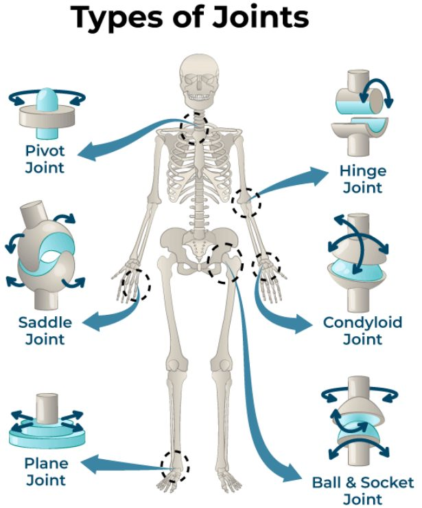
أنواع المفاصل الزليلية بحسب الشكل والحركة:Types of Synovial Joints According to Shape and Movement:
- • Plane joint – e.g., joints between the carpal bones (wrist bones).المفصل المنزلق – مثل المفاصل بين عظام الرسغ.
- • Hinge joint – e.g., the elbow joint.المفصل الرزّي – مثل مفصل المرفق.
- • Pivot joint – e.g., the joint between the first and second cervical vertebrae (atlas and axis).المفصل المحوري – مثل المفصل بين الفقرتين العنقيتين الأولى والثانية (الأطلس والمحور).
- • Condyloid joint – e.g., the wrist joint.المفصل العقدي (اللقمي) – مثل مفصل الرسغ.
- • Saddle joint – e.g., the joint at the base of the thumb.المفصل السرجي – مثل المفصل عند قاعدة الإبهام.
- • Ball and socket joint – e.g., the hip and shoulder joints.المفصل الكروي – مثل مفصلي الورك والكتف.
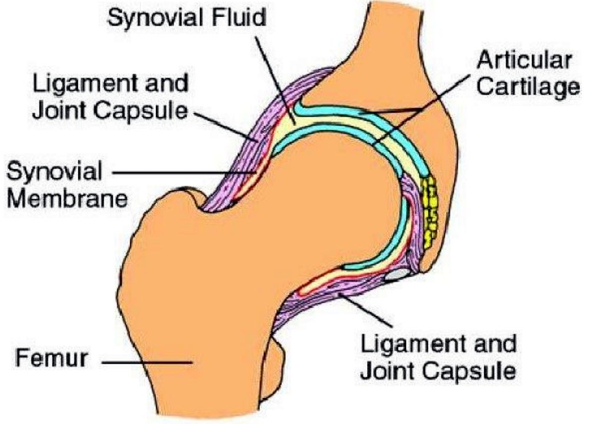
الأربطةLigaments
3- الأربطة3- Ligaments
The ligaments of the hip joint act to increase stability. They can be divided into two groups – intracapsular and extracapsular:
تعمل أربطة مفصل الورك على زيادة ثباته. وتنقسم إلى مجموعتين: داخل الكبسولة وخارجها:
داخل الكبسولةIntracapsular
The only intracapsular ligament is the ligament of head of femur. It is a relatively small structure, which runs from the acetabular fossa to the fovea of the femur.
الرباط الوحيد داخل الكبسولة هو رباط رأس عظم الفخذ. وهو بنية صغيرة نسبياً تمتد من الحفرة الحُقّية إلى نقرة رأس الفخذ.
It encloses a branch of the obturator artery (artery to head of femur), a minor source of arterial supply to the hip joint.
ويحتوي على فرع من الشريان السدّادي (الشريان المغذّي لرأس الفخذ)، وهو مصدر شرياني ثانوي لمفصل الورك.
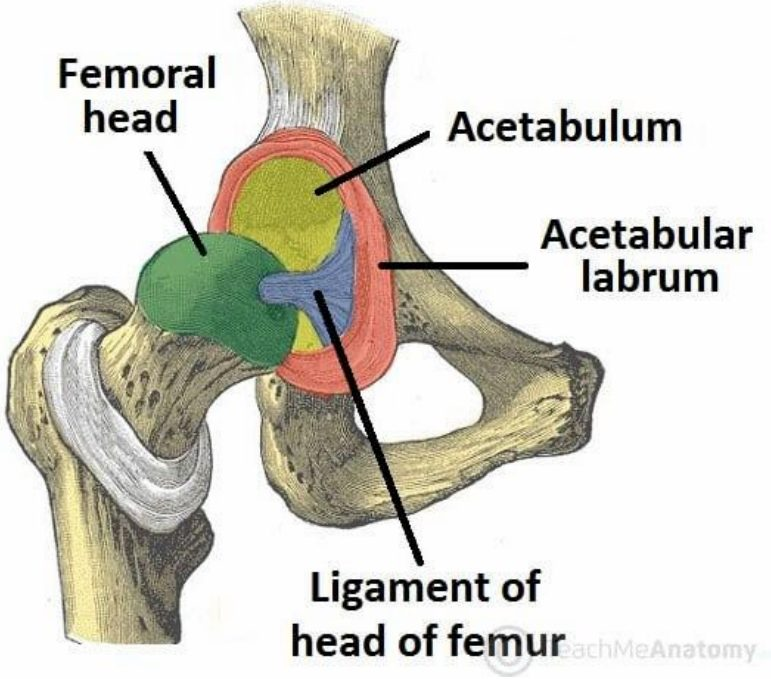
خارج الكبسولةExtracapsular
There are three main extracapsular ligaments, continuous with the outer surface of the hip joint capsule:
هناك ثلاثة أربطة رئيسية خارج الكبسولة، تتصل بالسطح الخارجي لكبسولة مفصل الورك:
- • Iliofemoral ligament – arises from the anterior inferior iliac spine and then bifurcates before inserting into the intertrochanteric line of the femur.الرباط الحرقفي الفخذي – ينشأ من الشوكة الحرقفية الأمامية السفلى، ثم ينقسم قبل أن يتثبّت في الخط بين المدوّرين لعظم الفخذ.
- • It has a ‘Y’ shaped appearance, and prevents hyperextension of the hip joint. It is the strongest of the three ligaments.شكله يشبه حرف Y، ويمنع البسط المفرط لمفصل الورك. وهو أقوى الأربطة الثلاثة.
- • Pubofemoral – spans between the superior pubic rami and the intertrochanteric line of the femur, reinforcing the capsule anteriorly and inferiorly.الرباط العاني الفخذي – يمتد بين الفرعين العانيين العلويين والخط بين المدوّرين لعظم الفخذ، ويقوّي الكبسولة من الأمام والأسفل.
- • It has a triangular shape, and prevents excessive abduction and extension.شكله مثلثي، ويمنع التبعيد والبسط المفرطين.
- • Ischiofemoral– spans between the body of the ischium and the greater trochanter of the femur, reinforcing the capsule posteriorly.الرباط الإسكي الفخذي – يمتد بين جسم الإسك والمدوَّر الكبير لعظم الفخذ، ويقوّي الكبسولة من الخلف.
- • It has a spiral orientation, and prevents hyperextension and holds the femoral head in the acetabulum.اتجاهه حلزوني، ويمنع البسط المفرط ويُبقي رأس عظم الفخذ داخل الحُقّ.
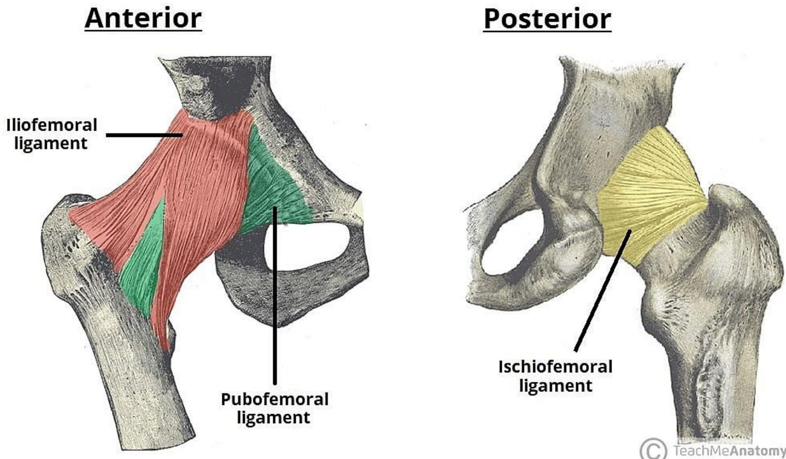
الملامح الشعاعيةRadiological Features
الملامح الشعاعيةRadiological features
Radiological features of the hip joint involve a combination of anatomical landmarks and specific measurements on X-rays, including the acetabulum and femoral head relationship, joint space width, and various lines and angles used to assess stability and alignment. Key views include the anteroposterior (AP) pelvis, lateral views (frog-leg and true lateral), and oblique views like the Judet view. Important measurements include the lateral center-edge angle (LCEA), Tönnis angle, Shenton line, and alpha angle.
تشمل الملامح الشعاعية لمفصل الورك مجموعة من المعالم التشريحية والقياسات المحدّدة على صور الأشعة السينية، ومنها علاقة الحُقّ برأس عظم الفخذ، وعرض الحيّز المفصلي، وخطوط وزوايا مختلفة تُستخدم لتقييم الثبات والمحاذاة. ومن الإسقاطات الأساسية الإسقاط الأمامي الخلفي للحوض، والإسقاطان الجانبيان (وضع الضفدع والجانبي الحقيقي)، والإسقاطات المائلة مثل إسقاط Judet. ومن القياسات المهمة زاوية المركز–الحافة الجانبية، وزاوية Tönnis، وخط Shenton، وزاوية ألفا.
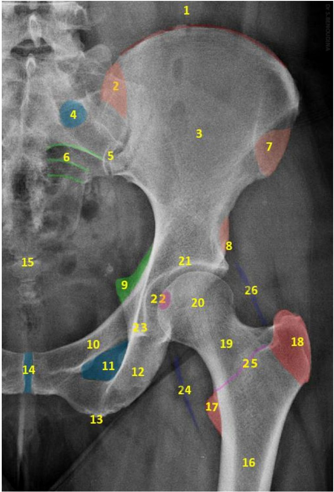
- 1. iliac crestالعُرف الحرقفي
- 2. posterior superior iliac spineالشوكة الحرقفية الخلفية العليا
- 3. iliumالحرقفة
- 4. anterior sacral foraminaالثقوب العجزية الأمامية
- 5. sacroiliac jointالمفصل العجزي الحرقفي
- 6. sacral arcuate linesالخطوط العجزية المقوّسة
- 7. anterior superior iliac spineالشوكة الحرقفية الأمامية العليا
- 8. anterior inferior iliac spineالشوكة الحرقفية الأمامية السفلى
- 9. ischial spineالشوكة الإسكية
- 10. superior pubic ramusالفرع العاني العلوي
- 11. obturator foramenالثقبة السدّادية
- 12. ischiumالإسك
- 13. ischial tuberosityالحدبة الإسكية
- 14. symphysis pubisالارتفاق العاني
- 15. coccyxالعُصعص
- 16. femurعظم الفخذ
- 17. lesser trochanterالمدوَّر الصغير
- 18. greater trochanterالمدوَّر الكبير
- 19. femoral neckعنق الفخذ
- 20. femoral headرأس عظم الفخذ
- 21. acetabulumالحُقّ
- 22. fovea centralisالنقرة المركزية
- 23. Koehler's teardropدمعة Koehler
- 24. psoas fat padالوسادة الدهنية القطنية
- 25. intertrochanteric crestالعُرف بين المدوّرين
- 26. gluteal fat padالوسادة الدهنية الإليوية
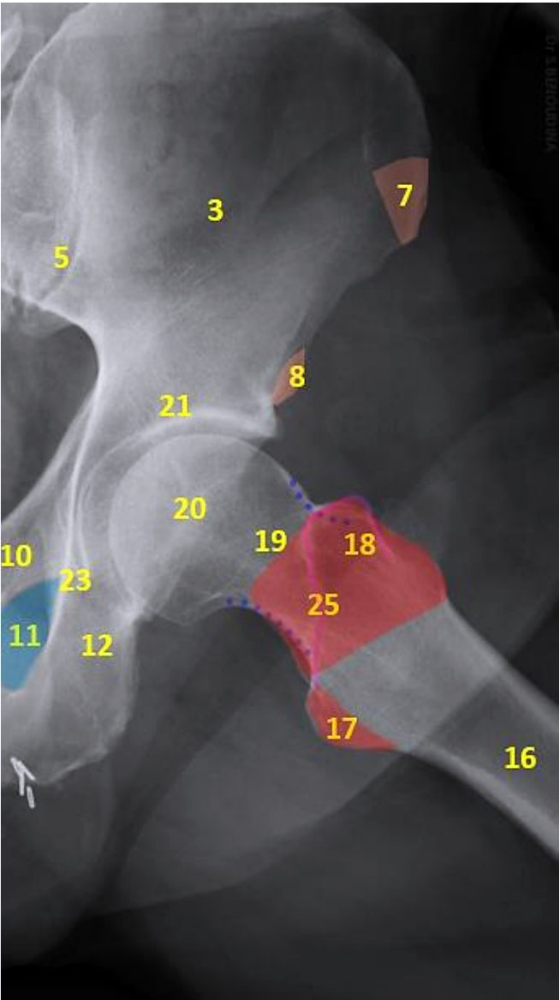
Frontal projection demonstrating important lines which are color coded. Light broad green- iliopubic line. Dark thin green- ilioischial line. Pink- Acetabular roof. Red- Anterior acetabular wall. Dark blue-Posterior acetabular wall. Light blue curved-Koehler’s teardrop.
إسقاط أمامي يبيّن خطوطاً مهمة مرمّزة بالألوان. الأخضر العريض الفاتح: الخط الحرقفي العاني. الأخضر الداكن الرفيع: الخط الحرقفي الإسكي. الوردي: سقف الحُقّ. الأحمر: الجدار الأمامي للحُقّ. الأزرق الداكن: الجدار الخلفي للحُقّ. الأزرق الفاتح المنحني: دمعة Koehler.
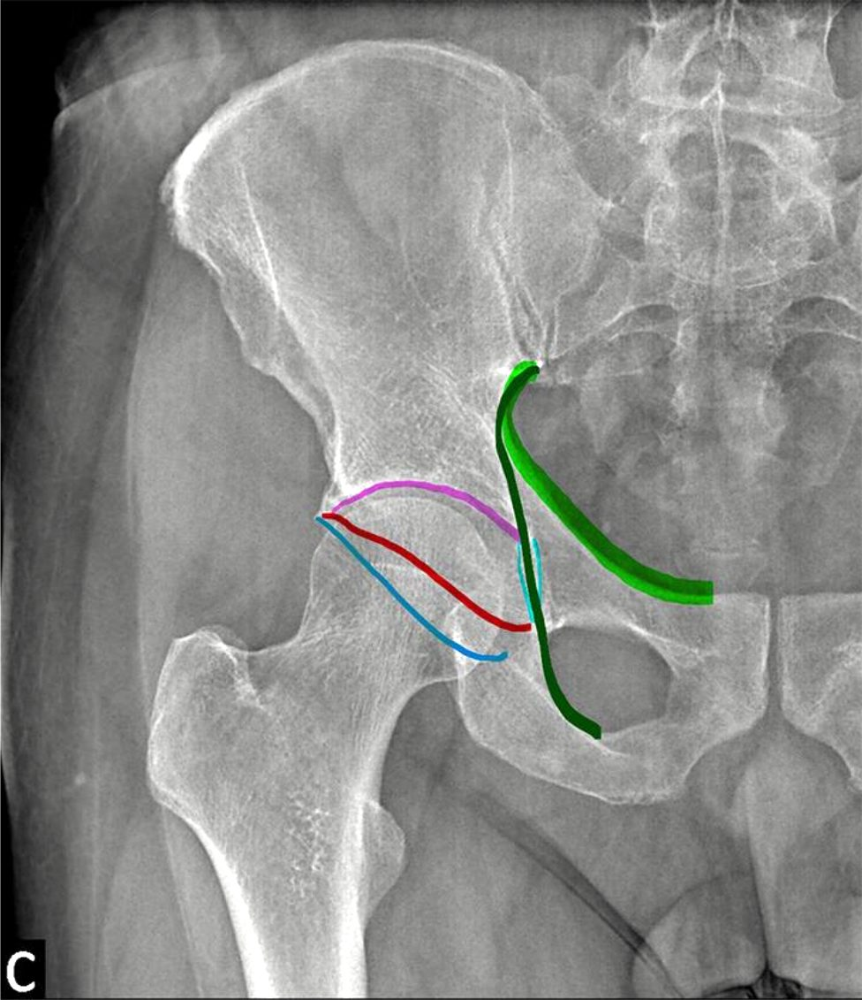
زاوية المركز–الحافة الجانبيةLateral center-edge angle
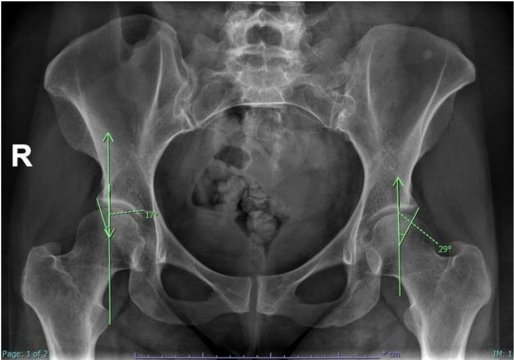
- • <20°: acetabular dysplasiaأقل من 20°: خلل تنسّج الحُقّ
- • 20-25°: borderline acetabular dysplasia20–25°: خلل تنسّج حدّي في الحُقّ
- • 25-40°: normal25–40°: طبيعي
- • >40°: pincer morphology of FAIأكثر من 40°: شكل الكمّاشة (pincer) في الاصطدام الفخذي الحُقّي FAI
زاوية تونّيسTönnis angle
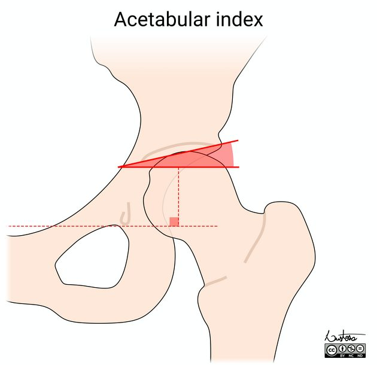
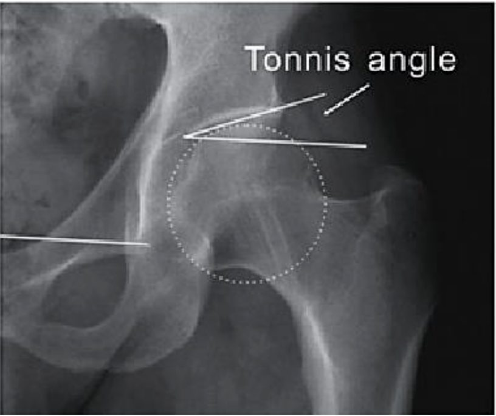
Different normal ranges have been published by different authors: decreased acetabular inclination: <0° 5 or <3° values can be negative at risk for pincer morphology of femoroacetabular impingement (FAI) normal range: 0-10° 5 or 3-13° increased acetabular inclination: >10° 5 or >13° acetabular dysplasia
نشر مؤلفون مختلفون مدياتٍ طبيعية مختلفة: انخفاض ميل الحُقّ: أقل من 0° أو أقل من 3°، وقد تكون القيم سالبة، وهو معرّض لشكل الكمّاشة في الاصطدام الفخذي الحُقّي FAI. المدى الطبيعي: 0–10° أو 3–13°. زيادة ميل الحُقّ: أكثر من 10° أو أكثر من 13°، وهو خلل تنسّج الحُقّ.
خط شنتونShenton line
Shenton line is an imaginary curved line drawn along the inferior border of the superior pubic ramus (superior border of the obturator foramen) and along the inferomedial border of the neck of femur. This line should be continuous and smooth .
خط Shenton خط منحنٍ تخيّلي يُرسم على طول الحافة السفلية للفرع العاني العلوي (الحافة العلوية للثقب السدّادي) وعلى طول الحافة السفلية الإنسية لعنق الفخذ. ويجب أن يكون هذا الخط متصلاً وأملس.
Interruption of the Shenton line can indicate (in the correct clinical scenario):
قد يدلّ انقطاع خط Shenton (في السياق السريري المناسب) على:
- • developmental dysplasia of the hip (DDH)خلل التنسّج النمائي للورك
- • fractured neck of femurكسر عنق الفخذ
- • excessive external rotation of the normal hip can also disrupt the Shenton line, however, there is no displacement of the femoral head 3كما يمكن أن يقطع الدوران الخارجي المفرط للورك الطبيعي خط Shenton، لكن ليس هناك إزاحة لرأس عظم الفخذ 3
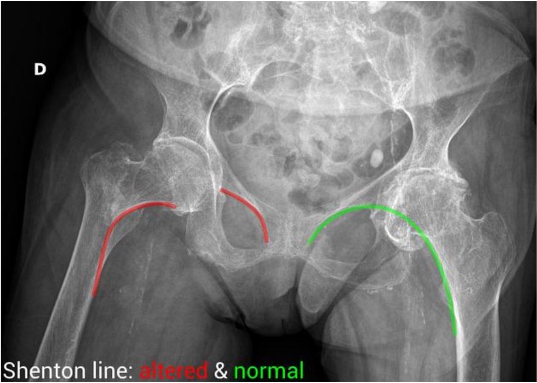
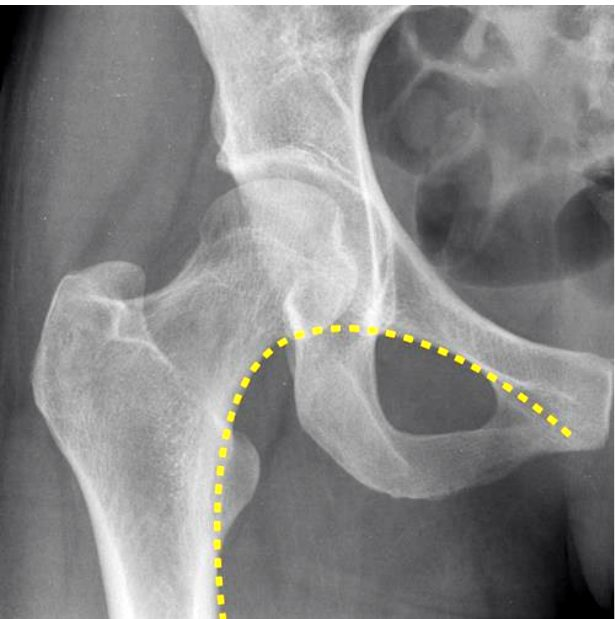
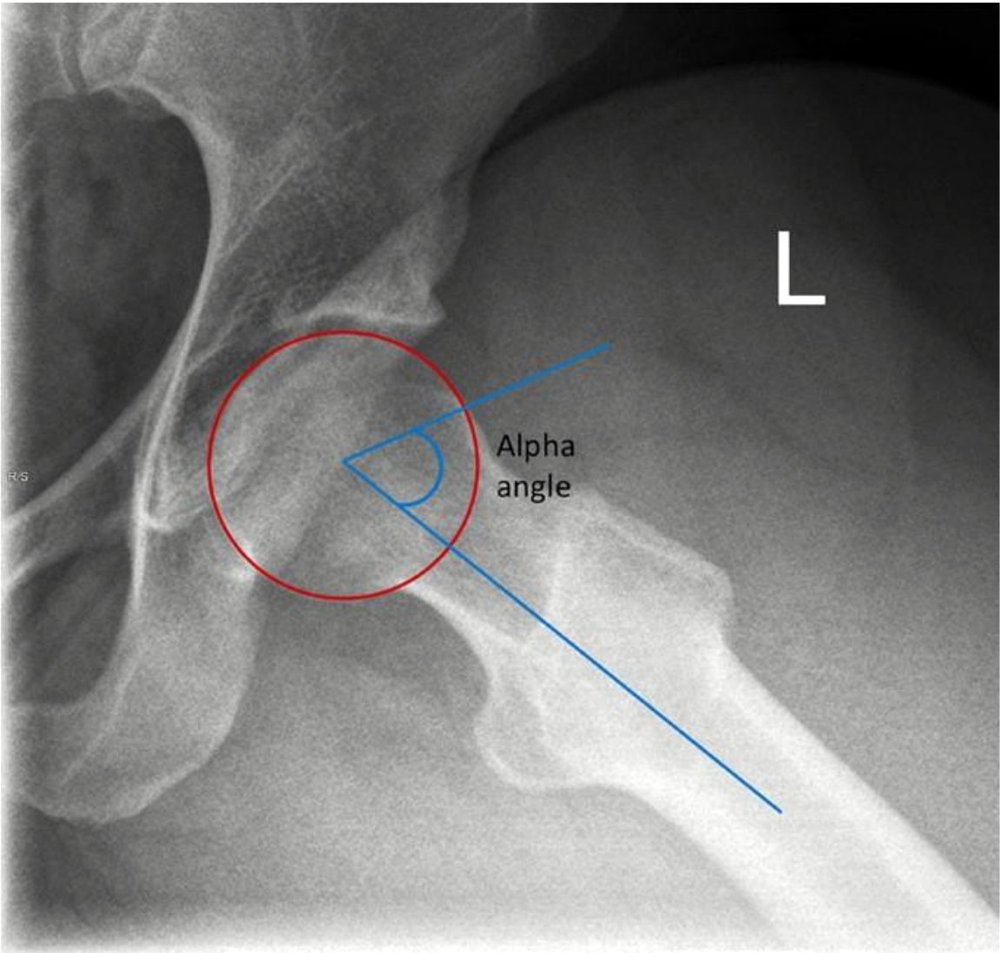
- • ≥60°: normal1- 60° أو أكثر: طبيعي
- • <60°2- أقل من 60°
- • >12 weeks old: acetabular dysplasiaأكبر من 12 أسبوعاً: خلل تنسّج الحُقّ
- • 0-12 weeks old: could represent a physiologically immature hip that could go on to mature without treatmentمن 0 إلى 12 أسبوعاً: قد يمثّل وركاً غير ناضجة فسيولوجياً قد تنضج من دون علاج
خلع مفصل الوركDislocation of the Hip Joint
خلع مفصل الوركDislocation of the Hip Joint
الخلع الخلقيCongenital Dislocation
Congenital hip dislocation occurs as a result of developmental dysplasia of the hip (DDH). It occurs when the Acetabulum is shallow as a result of failure to develop properly in utero
ينتج الخلع الخلقي للورك عن خلل التنسّج النمائي للورك DDH. ويحدث عندما يكون الحُقّ ضحلاً نتيجة فشل نموّه نمواً سليماً داخل الرحم.
Common clinical features include:
وتشمل الأعراض السريرية الشائعة:
- • Limited abduction at the hip jointمحدودية التبعيد في مفصل الورك
- • Limb length discrepancy – the affected limb is shorterاختلاف طول الطرفين – الطرف المصاب أقصر
- • Asymmetrical gluteal or thigh skin foldsعدم تناظر ثنيات الجلد الإليوية أو الفخذية
DDH is usually treated with a Pavlik harness. This holds the femoral head in the acetabular fossa and promotes normal development of the hip joint. Surgery is indicated in cases that do not respond to harness treatment.
يُعالَج DDH عادةً بحزام Pavlik، الذي يُبقي رأس عظم الفخذ في الحفرة الحُقّية ويعزّز النمو الطبيعي لمفصل الورك. وتُجرى الجراحة في الحالات التي لا تستجيب لعلاج الحزام.
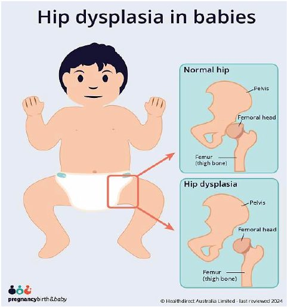
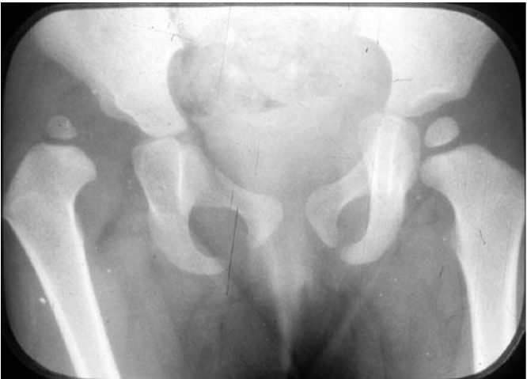
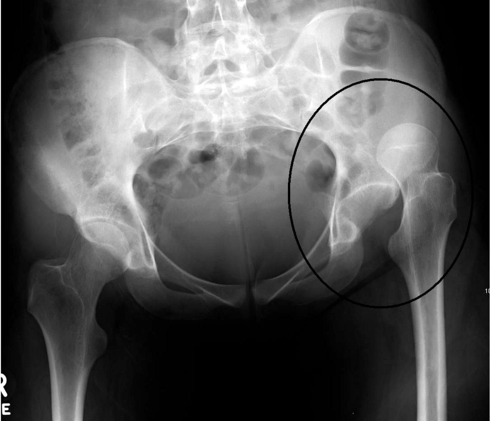
الخلع المكتسبAcquired Dislocation
Acquired dislocations of the hip joint are relatively uncommon, owing to the strength and stability of the joint. They usually occur as a result of trauma, but it can occur as a complication following Total Hip Replacement or hemiarthroplasty.
الخلع المكتسب لمفصل الورك غير شائع نسبياً بسبب قوة المفصل وثباته. ويحدث عادةً نتيجة رضّ، لكنه قد يحدث أيضاً كمضاعفة بعد استبدال الورك الكامل أو رأب المفصل الجزئي.
There are two main types of acquired hip dislocation; posterior and anterior:
للخلع المكتسب للورك نوعان رئيسيان: خلفي وأمامي:
- • Posterior dislocation (90%) – the femoral head is forced posteriorly, and tears through the inferior and posterior part of the joint capsule, where it is at its weakest.الخلع الخلفي (90٪) – يُدفع رأس عظم الفخذ إلى الخلف، ويمزّق الجزء السفلي الخلفي من كبسولة المفصل، حيث تكون أضعف ما يمكن.
- • The affected limb becomes shortened and medially rotated.يصبح الطرف المصاب مقصَّراً ومدوَّراً إلى الإنسي.
- • The sciatic nerve runs posteriorly to the hip joint, and is at risk of injury (occurs in 10-20% of cases). This is often associated with anterior femoral head and posterior wall fracturesيمرّ العصب الوركي خلف مفصل الورك وهو معرّض للإصابة (تحدث في 10–20٪ من الحالات). ويرتبط ذلك غالباً بكسور رأس الفخذ الأمامية وكسور الجدار الخلفي.
- • Anterior dislocation (rare) – occurs as a consequence of traumatic extension, abduction and lateral rotation. The femoral head is displaced anteriorly and (usually) inferiorly in relation to the acetabulum.الخلع الأمامي (نادر) – يحدث نتيجة بسط وتبعيد ودوران وحشي رضّي. ويُزاح رأس عظم الفخذ إلى الأمام، وعادةً إلى الأسفل، بالنسبة للحُقّ.
مقارنة المفراس والرنين وتشريح الوركCT vs MRI & Hip Anatomy on CT/MRI
مقارنة بين المفراس CT والرنين MRI في تقييم مفصل الورك والحوضComparison of CT and MRI in Hip and Pelvic Joint Evaluation
الأفضل لتقييم العظمBest for bone evaluation
- • Excellent for bone details, complex fractures, structural deformities, and surgical planningالمفراس CT: ممتاز لتفاصيل العظم والكسور المعقّدة والتشوّهات البنيوية والتخطيط الجراحي
- • Less accurate for fine fracturesالرنين MRI: أقل دقة للكسور الدقيقة
الغضروفCartilage
- • Poor, cartilage not well visualizedالمفراس CT: ضعيف، فالغضروف لا يُرى جيداً
- • Excellent for assessing cartilage, wear, and tearsالرنين MRI: ممتاز لتقييم الغضروف والتآكل والتمزقات
الأربطة والأوتار والعضلاتLigaments, tendons, and muscles
- • Limitedالمفراس CT: محدود
- • Clear visualization of muscles, ligaments, and tendonsالرنين MRI: رؤية واضحة للعضلات والأربطة والأوتار
كشف الالتهابات أو الأورامDetection of infections or tumors
- • Good for bone lesionsالمفراس CT: جيد للآفات العظمية
- • Excellent for soft tissue infections and tumorsالرنين MRI: ممتاز لالتهابات الأنسجة الرخوة وأورامها
وذمة نقي العظمBone marrow edema
- • Not easily seenالمفراس CT: لا تُرى بسهولة
- • Detects early edema before fractures appearالرنين MRI: يكشف الوذمة المبكرة قبل ظهور الكسور
التخطيط الجراحي للعظامSurgical planning for bones
- • Very preciseالمفراس CT: دقيق جداً
- • Less accurate for bony detailsالرنين MRI: أقل دقة لتفاصيل العظم
التعرّض للإشعاعRadiation exposure
- • Uses ionizing radiationالمفراس CT: يستخدم إشعاعاً مؤيِّناً
- • No ionizing radiation, safer for patientsالرنين MRI: بلا إشعاع مؤيِّن، وأكثر أماناً للمرضى
تشريح الورك بالمفراسCT Anatomy of the Hip Joint
Normal CT of the hip. A, Axial CT image. B, Coronal multiplanar reformatted CT image. C and D, Surface rendering three-dimensional CT images show a normal left hip.
مفراس طبيعي للورك. أ: مقطع محوري. ب: مقطع إكليلي معاد التكوين متعدد المستويات. ج و د: صور ثلاثية الأبعاد بتقنية إظهار السطح تبيّن وركاً يسرى طبيعية.
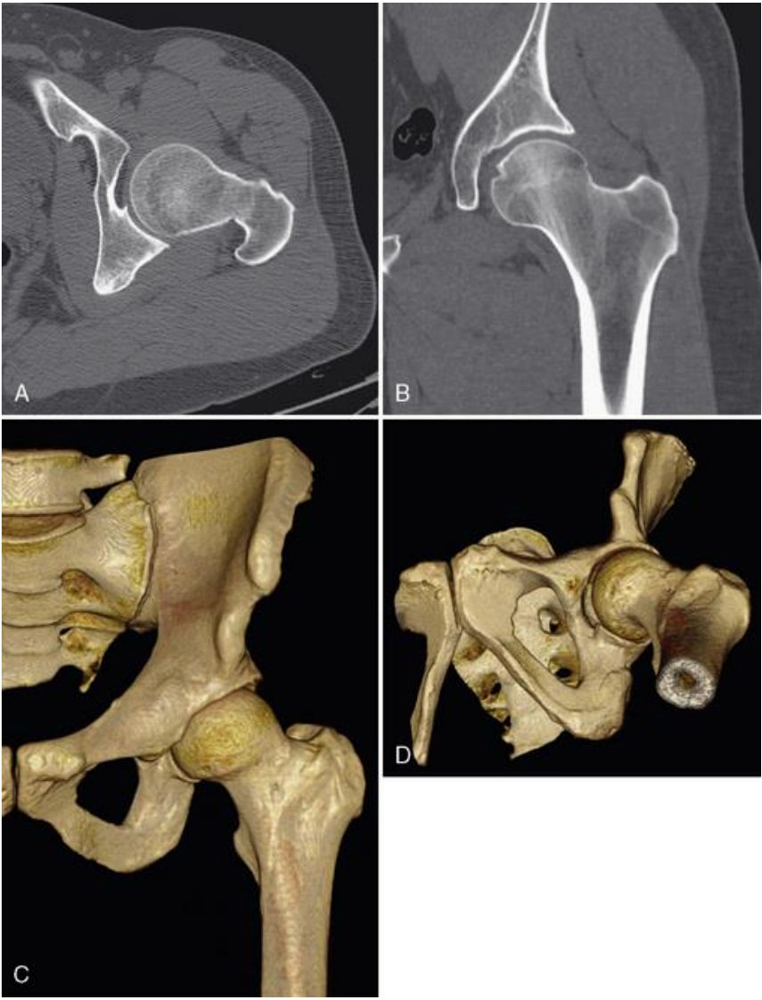
تشريح الورك بالرنينMRI Anatomy of the Hip Joint
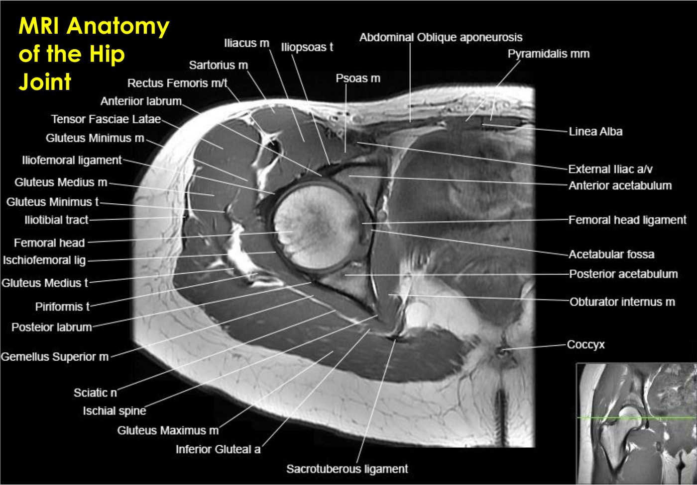
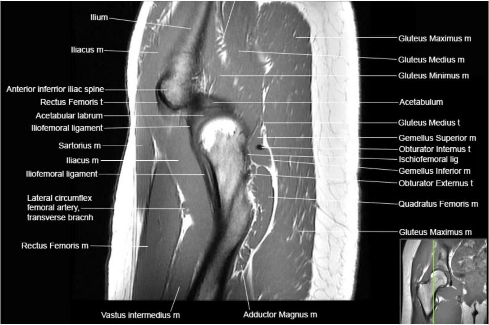
https://freitasrad.net/pages/atlas/Hip/Hip.php
مصدر الأطلس: https://freitasrad.net/pages/atlas/Hip/Hip.php
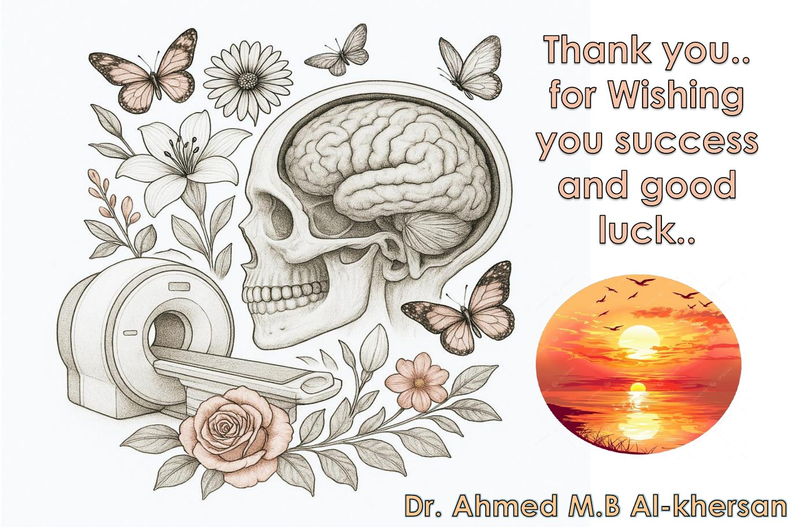
المحاضرة مسموعة
نص الأستاذ بالإنكليزي مثل الأصل · 12.0 دقيقة. اضغط أي جملة تسمعها، أو مصطلح منقّط تسمع لفظه ومعناه.
Introduction & Articulating Surfacesمقدمة وسطحا المفصل
Introduction & Articulating Surfaces
Lecture 5: Hip Joint: Type, Articular Surfaces, Capsule and Ligaments, Radiological Features, and Dislocation
The Hip Joint
The hip joint is a ball and socket synovial joint, formed by an articulation between the pelvic acetabulum and the head of the femur.
It forms a connection from the lower limb to the pelvic girdle, and thus is designed for stability and weight-bearing – rather than a large range of movement.
Structures of the Hip Joint
1- Articulating Surfaces
The hip joint consists of an articulation between the head of femur and acetabulum of the pelvis.
The acetabulum is a cup-like depression located on the inferolateral aspect of the pelvis. Its cavity is deepened by the presence of a fibrocartilaginous collar – the acetabular labrum. The head of femur is hemispherical, and fits completely into the concavity of the acetabulum.
Both the acetabulum and head of femur are covered in articular cartilage, which is thicker at the places of weight bearing.
The capsule of the hip joint attaches to the edge of the acetabulum proximally. Distally, it attaches to the intertrochanteric line anteriorly and the femoral neck posteriorly.
Capsule & Types of Jointsكبسولة المفصل وأنواع المفاصل
Capsule & Types of Joints
2- Capsule of the Hip Joint
Definition
The articular capsule of the hip joint is a strong fibrous envelope that completely surrounds the joint, connecting the acetabulum of the pelvis to the neck of the femur. It provides both stability and mobility to the hip.
Structure
The capsule has two main layers:
Fibrous layer (outer): Thick and tough, made of dense connective tissue.
Synovial membrane (inner): Lines the inside of the capsule and secretes synovial fluid, which lubricates the joint and nourishes the articular cartilage.
Types of Joints in the Human Body
Fibrous joints:
Bones are connected by fibrous tissue.
Movement: very limited or none.
Example: sutures of the skull.
Cartilaginous joints:
Bones are joined by cartilage.
Movement: slight.
Example: pubic symphysis.
Synovial joints:
Have a joint cavity filled with synovial fluid.
Movement: freely movable.
Types: ball and socket, hinge, pivot, saddle, etc.
Hip Joint:
Type: Synovial ball and socket joint.
Articular surfaces: Head of the femur and the acetabulum of the hip bone.
Movement: Free in all directions — flexion, extension, abduction, adduction, rotation, and circumduction.
Types of Synovial Joints According to Shape and Movement:
Plane joint – e.g., joints between the carpal bones (wrist bones).
Hinge joint – e.g., the elbow joint.
Pivot joint – e.g., the joint between the first and second cervical vertebrae (atlas and axis).
Condyloid joint – e.g., the wrist joint.
Saddle joint – e.g., the joint at the base of the thumb.
Ball and socket joint – e.g., the hip and shoulder joints.
Ligamentsالأربطة
Ligaments
3- Ligaments
The ligaments of the hip joint act to increase stability. They can be divided into two groups – intracapsular and extracapsular:
Intracapsular
The only intracapsular ligament is the ligament of head of femur. It is a relatively small structure, which runs from the acetabular fossa to the fovea of the femur.
It encloses a branch of the obturator artery (artery to head of femur), a minor source of arterial supply to the hip joint.
Extracapsular
There are three main extracapsular ligaments, continuous with the outer surface of the hip joint capsule:
Iliofemoral ligament – arises from the anterior inferior iliac spine and then bifurcates before inserting into the intertrochanteric line of the femur.
It has a ‘Y’ shaped appearance, and prevents hyperextension of the hip joint. It is the strongest of the three ligaments.
Pubofemoral – spans between the superior pubic rami and the intertrochanteric line of the femur, reinforcing the capsule anteriorly and inferiorly.
It has a triangular shape, and prevents excessive abduction and extension.
Ischiofemoral– spans between the body of the ischium and the greater trochanter of the femur, reinforcing the capsule posteriorly.
It has a spiral orientation, and prevents hyperextension and holds the femoral head in the acetabulum.
Radiological Featuresالملامح الشعاعية
Radiological Features
Radiological features
Radiological features of the hip joint involve a combination of anatomical landmarks and specific measurements on X-rays, including the acetabulum and femoral head relationship, joint space width, and various lines and angles used to assess stability and alignment. Key views include the anteroposterior (AP) pelvis, lateral views (frog-leg and true lateral), and oblique views like the Judet view. Important measurements include the lateral center-edge angle (LCEA), Tönnis angle, Shenton line, and alpha angle.
iliac crest
posterior superior iliac spine
ilium
anterior sacral foramina
sacroiliac joint
sacral arcuate lines
anterior superior iliac spine
anterior inferior iliac spine
ischial spine
superior pubic ramus
obturator foramen
ischium
ischial tuberosity
symphysis pubis
coccyx
femur
lesser trochanter
greater trochanter
femoral neck
femoral head
acetabulum
fovea centralis
Koehler's teardrop
psoas fat pad
intertrochanteric crest
gluteal fat pad
Frontal projection demonstrating important lines which are color coded. Light broad green- iliopubic line. Dark thin green- ilioischial line. Pink- Acetabular roof. Red- Anterior acetabular wall. Dark blue-Posterior acetabular wall. Light blue curved-Koehler’s teardrop.
Lateral center-edge angle
<20°: acetabular dysplasia
20-25°: borderline acetabular dysplasia
25-40°: normal
>40°: pincer morphology of FAI
Tönnis angle
Different normal ranges have been published by different authors: decreased acetabular inclination: <0° 5 or <3° values can be negative at risk for pincer morphology of femoroacetabular impingement (FAI) normal range: 0-10° 5 or 3-13° increased acetabular inclination: >10° 5 or >13° acetabular dysplasia
Shenton line
Shenton line is an imaginary curved line drawn along the inferior border of the superior pubic ramus (superior border of the obturator foramen) and along the inferomedial border of the neck of femur. This line should be continuous and smooth .
Interruption of the Shenton line can indicate (in the correct clinical scenario):
developmental dysplasia of the hip (DDH)
fractured neck of femur
excessive external rotation of the normal hip can also disrupt the Shenton line, however, there is no displacement of the femoral head 3
≥60°: normal
>12 weeks old: acetabular dysplasia
0-12 weeks old: could represent a physiologically immature hip that could go on to mature without treatment
Dislocation of the Hip Jointخلع مفصل الورك
Dislocation of the Hip Joint
Dislocation of the Hip Joint
Congenital Dislocation
Congenital hip dislocation occurs as a result of developmental dysplasia of the hip (DDH). It occurs when the Acetabulum is shallow as a result of failure to develop properly in utero
Common clinical features include:
Limited abduction at the hip joint
Limb length discrepancy – the affected limb is shorter
Asymmetrical gluteal or thigh skin folds
DDH is usually treated with a Pavlik harness. This holds the femoral head in the acetabular fossa and promotes normal development of the hip joint. Surgery is indicated in cases that do not respond to harness treatment.
Acquired Dislocation
Acquired dislocations of the hip joint are relatively uncommon, owing to the strength and stability of the joint. They usually occur as a result of trauma, but it can occur as a complication following Total Hip Replacement or hemiarthroplasty.
There are two main types of acquired hip dislocation; posterior and anterior:
Posterior dislocation (90%) – the femoral head is forced posteriorly, and tears through the inferior and posterior part of the joint capsule, where it is at its weakest.
The affected limb becomes shortened and medially rotated.
The sciatic nerve runs posteriorly to the hip joint, and is at risk of injury (occurs in 10-20% of cases). This is often associated with anterior femoral head and posterior wall fractures
Anterior dislocation (rare) – occurs as a consequence of traumatic extension, abduction and lateral rotation. The femoral head is displaced anteriorly and (usually) inferiorly in relation to the acetabulum.
CT vs MRI & Hip Anatomy on CT/MRIمقارنة المفراس والرنين وتشريح الورك
CT vs MRI & Hip Anatomy on CT/MRI
Comparison of CT and MRI in Hip and Pelvic Joint Evaluation
Best for bone evaluation
Excellent for bone details, complex fractures, structural deformities, and surgical planning
Less accurate for fine fractures
Cartilage
Poor, cartilage not well visualized
Excellent for assessing cartilage, wear, and tears
Ligaments, tendons, and muscles
Limited
Clear visualization of muscles, ligaments, and tendons
Detection of infections or tumors
Good for bone lesions
Excellent for soft tissue infections and tumors
Bone marrow edema
Not easily seen
Detects early edema before fractures appear
Surgical planning for bones
Very precise
Less accurate for bony details
Radiation exposure
Uses ionizing radiation
No ionizing radiation, safer for patients
CT Anatomy of the Hip Joint
Normal CT of the hip. A, Axial CT image. B, Coronal multiplanar reformatted CT image. C and D, Surface rendering three-dimensional CT images show a normal left hip.
MRI Anatomy of the Hip Joint
https://freitasrad.net/pages/atlas/Hip/Hip.php
29 سؤال من نص المحاضرة، ويّا «ليش صح» بعد كل جواب.
ابدأ الاختباراضغط أي مصطلح منقّط تسمع لفظه ومعناه.